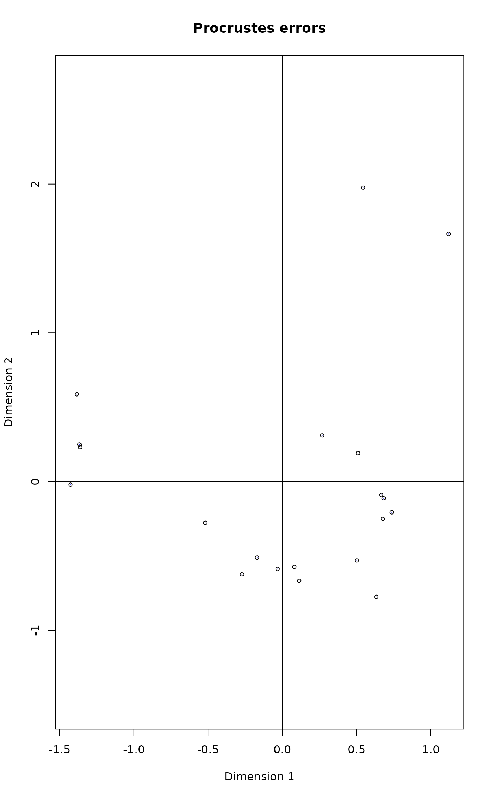

Weighted Classical (Metric) Multidimensional Scaling
wcmdscale.RdWeighted classical multidimensional scaling, also known as weighted principal coordinates analysis.
Arguments
- d
a distance structure such as that returned by
distor a full symmetric matrix containing the dissimilarities.- k
the dimension of the space which the data are to be represented in; must be in \(\{1,2,\ldots,n-1\}\). If missing, all dimensions with above zero eigenvalue.
- eig
indicates whether eigenvalues should be returned.
- add
an additive constant \(c\) is added to the non-diagonal dissimilarities such that all \(n-1\) eigenvalues are non-negative. Alternatives are
"lingoes"(default, also used withTRUE) and"cailliez"(which is the only alternative incmdscale). See Legendre & Anderson (1999).- x.ret
indicates whether the doubly centred symmetric distance matrix should be returned.
- w
Weights of points.
- x
The
wcmdscaleresult object when the function was called with optionseig = TRUEorx.ret = TRUE(See Details).- choices
Axes to be returned;
NAreturns all real axes.- display
Kind of scores. Normally only
"sites"are available, but"species"can be supplemented withsppscores.- type
Type of graph which may be
"t"ext,"p"oints or"n"one.- tidy
Return scores that are compatible with ggplot2: scores are in a
data.frame, score type is in the variablescorelabelled as"sites", weights in variableweigth, and names in variablelabel.- ...
Other arguments passed to graphical functions.
Details
Function wcmdscale is based on function
cmdscale (package stats of base R), but it uses
point weights. Points with high weights will have a stronger
influence on the result than those with low weights. Setting equal
weights w = 1 will give ordinary multidimensional scaling.
With default options, the function returns only a matrix of scores
scaled by eigenvalues for all real axes. If the function is called
with eig = TRUE or x.ret = TRUE, the function returns
an object of class "wcmdscale" with print,
plot, scores, eigenvals and
stressplot methods, and described in section Value.
The method is Euclidean, and with non-Euclidean dissimilarities some
eigenvalues can be negative. If this disturbs you, this can be
avoided by adding a constant to non-diagonal dissimilarities making
all eigenvalues non-negative. The function implements methods
discussed by Legendre & Anderson (1999): The method of Lingoes
(add="lingoes") adds the constant \(c\) to squared
dissimilarities \(d\) using \(\sqrt{d^2 + 2 c}\)
and the method of Cailliez (add="cailliez") to
dissimilarities using \(d + c\). Legendre & Anderson (1999)
recommend the method of Lingoes, and base R function
cmdscale implements the method of Cailliez.
Value
If eig = FALSE and x.ret = FALSE (default), a
matrix with k columns whose rows give the coordinates of
points corresponding to positive eigenvalues. Otherwise, an object
of class wcmdscale containing the components that are mostly
similar as in cmdscale:
- points
a matrix with
kcolumns whose rows give the coordinates of the points chosen to represent the dissimilarities.- eig
the \(n-1\) eigenvalues computed during the scaling process if
eigis true.- x
the doubly centred and weighted distance matrix if
x.retis true.- ac, add
additive constant and adjustment method used to avoid negative eigenvalues. These are
NAandFALSEif no adjustment was done.- GOF
Goodness of fit statistics for
kaxes. The first value is based on the sum of absolute values of all eigenvalues, and the second value is based on the sum of positive eigenvalues- weights
Weights.
- negaxes
A matrix of scores for axes with negative eigenvalues scaled by the absolute eigenvalues similarly as
points. This isNULLif there are no negative eigenvalues orkwas specified, and would not include negative eigenvalues.- call
Function call.
References
Gower, J. C. (1966) Some distance properties of latent root and vector methods used in multivariate analysis. Biometrika 53, 325–328.
Legendre, P. & Anderson, M. J. (1999). Distance-based redundancy analysis: testing multispecies responses in multifactorial ecological experiments. Ecology 69, 1–24.
Mardia, K. V., Kent, J. T. and Bibby, J. M. (1979). Chapter 14 of Multivariate Analysis, London: Academic Press.
See also
The function is modelled after cmdscale, but adds
weights (hence name) and handles negative eigenvalues differently.
eigenvals.wcmdscale and
stressplot.wcmdscale are some specific methods. Species
scores can be added to the result with sppscores. Other
multidimensional scaling methods are monoMDS, and
isoMDS and sammon in package
MASS.
Examples
## Correspondence analysis as a weighted principal coordinates
## analysis of Euclidean distances of Chi-square transformed data
data(dune)
rs <- rowSums(dune)/sum(dune)
d <- dist(decostand(dune, "chi"))
ord <- wcmdscale(d, w = rs, eig = TRUE)
## Ordinary CA
ca <- cca(dune)
## IGNORE_RDIFF_BEGIN
## Eigevalues are numerically similar
ca$CA$eig - ord$eig
#> CA1 CA2 CA3 CA4 CA5
#> -5.551115e-16 -1.609823e-15 -7.216450e-16 8.326673e-17 -5.551115e-17
#> CA6 CA7 CA8 CA9 CA10
#> -4.163336e-17 -1.387779e-16 -1.942890e-16 1.249001e-16 1.387779e-17
#> CA11 CA12 CA13 CA14 CA15
#> 1.110223e-16 6.245005e-17 4.857226e-17 -1.734723e-17 1.734723e-18
#> CA16 CA17 CA18 CA19
#> 3.469447e-18 -6.938894e-18 0.000000e+00 4.553649e-17
## Configurations are similar when site scores are scaled by
## eigenvalues in CA
procrustes(ord, ca, choices=1:19, scaling = "sites")
#>
#> Call:
#> procrustes(X = ord, Y = ca, choices = 1:19, scaling = "sites")
#>
#> Procrustes sum of squares:
#> -4.263e-14
#>
## IGNORE_RDIFF_END
plot(procrustes(ord, ca, choices=1:2, scaling="sites"))

## Reconstruction of non-Euclidean distances with negative eigenvalues
d <- vegdist(dune)
ord <- wcmdscale(d, eig = TRUE)
## Only positive eigenvalues:
cor(d, dist(ord$points))
#> [1] 0.9975185
## Correction with negative eigenvalues:
cor(d, sqrt(dist(ord$points)^2 - dist(ord$negaxes)^2))
#> [1] 1